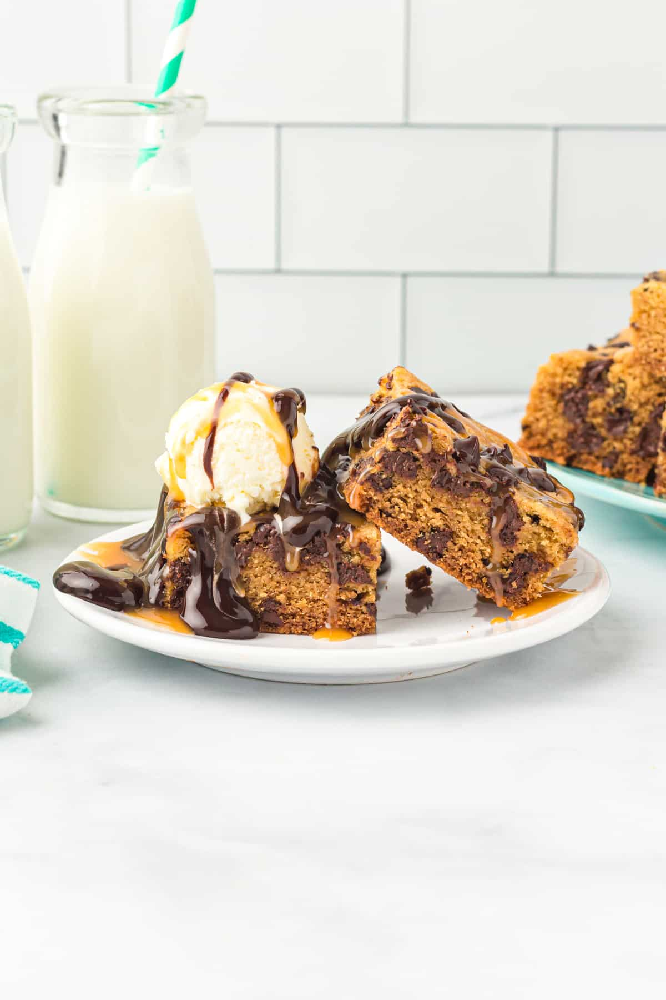

Soft, buttery, and loaded with chocolate-- whip up a batch of these glorious Chocolate Chip Cookie
Bars today! A delicious dessert or a weekday treat!
Ingredients:
- 2 1/2 cups all-purpose flour
- 1 tsp baking soda
- 1 tsp corn starch
- 1/2 tsp kosher salt
- 1 cup unsalted butter
- 1/2 cup granulated sugar
- 2 large eggs
- 2 tsp pure vanilla extract
- 1 1/2 cups semisweet chocolate chips
Directions:
- Preheat oven to 350 degrees F. Line an 8 x 8 - inch baking pan with parchmant paper and spray
with nonstick spray.
- In a medium bowl, whisk the flour, baking soda, corn starch, and salt together
- To the bowl of a stand mixer firtted with a paddle attachment, add the butter, brown sugar, and granulated sugar.
Beat until light and fluggy, about 1-2 minutes. Scrape down the sides of the bowl as needed.
- Add the eggs and vanilla and beat until well combined, about 1 minute.
- Mix the dry ingredients into the wet ingredients. Beat just until mixes and the dough starts sticking together.
Scrape down the sides of the bowl as needed.
- Gently fold in 1 cup of the chocolate chips.
- Transfer the cookie dough to the prepared pan. Use a rubber spatula or the back of a spoon to spread the cookie
dough into an even layer.
- Sprinkle the remaining 1/2 cup of chocolate chips over the top of the cookie dough.
- Bake for 15 Minutes.
- After 15 minutes, loosely cover the baking pan with aluminum foil. Bake for another 35 minutes, or until the edges
are set and the middle is slightly browned. A toothpick inserted in center should come out clean.
- Remove the pan from the oven and leave the cookie bars in the baking pan until completely cool.
- Once cool, remove the cookie bars from the baking pan and slice into 16 squares.